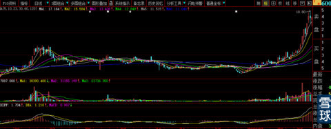
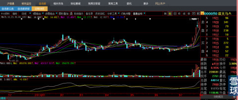

经历了一次完整的买入、翻倍、连续跌停、割肉全过程。见下图
上述经历让我痛下决心，读懂K线背后的密码。买来电脑，废寝忘食夜以继日。4年里当然有很多事情发生，但是学习K线图形坚持不缀。
2000年3月4日星期六，我翻到下图时，立刻眼睛一亮，昨日收盘的这根小中阳K线站立在股价整体图形之上，那种鹤立鸡群、超凡脱俗之感是我从来没有过的感觉（后来明白是复盘1万张图形后，熟能生巧的一下子顿悟，这就是“眼感”），犹如天灵盖突然一道佛光乍现。我现在相信和知道什么叫“顿悟”、“命运”。这个股票叫600756泰山旅游（现在叫：浪潮软件），这天的收盘价13.6元，流通盘3000万股。见下图
一周后，股价连续走高到18.8元历史最高价位置，第二天最低价跌到16.5元，上下落差13.93%见下图，庄家要的就是给技术派一个大型双头、触碰颈线位突破失败的效果。

半个月股价走到48元，一个月涨幅1.63倍。见下图。从它的周线我明白了这样几个经验：1、拉升前两周控制涨幅在10%—15%之间，后面两周会扩大周涨幅；2、从下半月开始拉升的股票，庄家会努力保证在月末收光头光脚大阳线，下月的月线涨幅高度不小月上月。3、月初开涨会保持到月终。这些是为什么呢？先不告诉你。自己去悟吧。
此后，我用了3个月时间日夜不眠的连续复盘，终于在没有任何人可以求助的情况下搞明白了”庄股坐庄全过程“经验：见下图。
1999年5月19日A股发生历史上著名的”519“行情，可能是券商自营盘比较保守，待行情已经进行1个月后才做出反应，积极拉高以涨停板方式建仓，利用大阴线反复搓合。那时候股本都很小，有3亿资金的庄家就是可以肆意横行的大庄家。等庄刚刚见仓完毕，6月30日1个半月的行情结束，庄家被牢牢套在山顶上。现在你们知道你仅仅是散户被套，庄家被套的概率远远大于散户。
再后来的6个月时间里，你们看下圈处，庄家跳空低开高走、高开低走，都是被套其中的庄家无奈之举，顺便混点小差价零花钱。到第7个月的12月年底，各方资金需要归还银行借款，庄家利用这个资金逼仓时机，用无量连续杀跌的方法，打出最后恐怖气氛空间，为再多收集跟庄者被套斩仓的带血筹码做局。
两个月后，股价图形就是我看到时候的样子，这种发散性缝隙均匀扩大的长中短期均线排列，我一辈子都不会忘记。那种有力、飘逸、阴阳搓合、最后脱颖而出的站上山顶欲与天公试比高的”玉树临风“架势。见下图。
这种空中加油的经典动作与分时图成交方法（现在无法再现了），15年来我一天都没有忘记过。你们把下图与再下图的深天马那天的图形比较一下，是不是有点感悟？

2014年8月3日星期日，我翻盘到下图，立刻被拽住翻盘的手停下来。稍加分析，义无反顾。8月4日周一，我一边砸盘卖出600735新华锦，要知道早盘怎么可能有90万股买单在下面接呀？我只能是隔着几个价位下砸5万股，卖出一部分立刻买进深天马，15分钟换仓完毕平均成交价17.32元，结果到收盘反而被套，那是比较大的一笔钱，一个低卖一个高买，里外落差十几万，没有任何盈亏心理感觉。

9个交易日后我在27.7涨停价2个多小时久封不停走人，见下图分时图。每股盈利正好10元多一点。仅这一单所赚是普通人家三辈子也挣不来的钱。这就是”技术的魅力“所在与只要付出，即使15年后也有回报。

记得在持股深天马9天的过程中，我看到000050深天马”东方财富股吧”那么散户惶惶不可终日，好心用“骑天马跨长江”名字点拨带头大哥，那帮破人被主观的“全息手机”概念鼓吹得不知道自己姓什么了，就如同我前天看到有人把“中国北车”用万字文估值到50元，我就知道那又是一个死了还没埋葬的蠢货。被套在27.7元的人，我跟帖说：要不了几天庄家和市场情绪会有一次创新高假突破给你们获利解套机会，有几人听得进？还恶毒的语言下三滥回击，去他娘的，再也不去股吧听散户鬼哭狼嚎了。就像我在《牛市忠告之三》、《如何狙击庄股》中图形讲解，傻子也看出券商股会调整多少个月，但是有几人听得进去？有几个人愿意多读20遍？那可是满地黄金呀！《忠告三》说的多清楚：券商会调整N个月，但是盘面不会熄灭，这个板块那个板块会开始，多清楚？还是那么多笨死人到处瞎撞瞎猜，用手里的破股票不停的烦问我。在我眼里都是待宰的羊被割的韭菜。也不想想：就券商股一个板块涨上天去好了，其他股都不涨，还有交易量吗？券商赖以支撑的炒上天的业绩从何而来？这么简单的逻辑都想不到，还他妈的炒股？不管多牛逼的阶段性瞎猫撞见死老鼠的牛人，都管不住自己的臆想主观性、屁股决定脑袋！